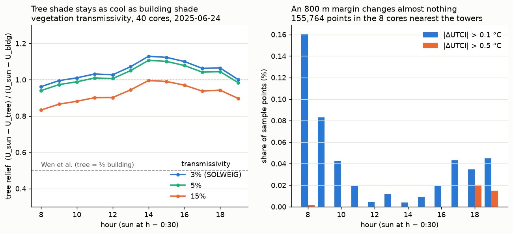

| Parameter | Value |
|---|---|
| Dates and hours | June 24 and July 29, 2025, 8:00–19:00 local time, every hour (24 sun positions) |
| Sun time of an hour | 30 min before the hour (15:00 = sun at 14:30), SOLWEIG’s convention for hourly mean radiation, for shade and heat alike |
| Grid resolution | 1 m |
| Sample spacing along sidewalks | 2 m |
| Observer height | 1.5 m above the ground (above the deck on bridges) |
| Ray step and maximum length | 1 m, 1,000 m |
| Minimum tree height | 2 m |
| Shade cost (shadiest walk) | C = L_sun + (1 − 0.5θ) L_tree + (1 − θ) L_building + (1 − 1.5θ) L_indoor |
| θ curve (distance walked l, in m) | θ(l) = 0.3961 / (1 + exp(−0.0111 (l − 859.6))) + 0.1958 |
| Frequent stop | ≥ 6 departures per hour on one route and direction, weekday 15:00–19:00 (2026-10-28); all rapid-transit stations |
| Maximum walk | 1,200 m along the network |
| Walk-length bands | under 300 m, 300–800 m, 800–1,200 m |
| No cooler option | the shadiest walk avoids less than 2% of the sun (sensitivity 1%, 5%, 10%) |
| Grid and clusters | 500 m cells with at least 20 walks of 300–800 m; k-means, k = 3 |
| Station ranking | at least 50 walks of 300–800 m |
| Heat model | SOLWEIG 2022a, GPU version solweig-gpu 2.0.0; global radiation split into direct and diffuse by the model; 153 sky patches for the sky view |
| Heat model tiles | 1,000 m cores, each run with a 400 m margin on every side; 400 cores per day (those with sidewalk points) |
| Weather | ERA5 hourly via Open-Meteo, one cell (40.0° N, 75.25° W) for the whole city; rows 7–19 h |
| Tree heights in the heat model | canopy pixels above 40 m dropped (also in the shadow model) |
| Light through tree crowns | 3% (fixed in SOLWEIG; tested at 5% and 15%) |
| Land cover for the heat model | 2018 land cover → UMEP classes paved, building, grass, bare soil, water; canopy pixels take the class of the nearest non-canopy pixel |
| Heat cost (coolest walk) | C = Σ L (1 − θ r), r = (U_sun − U) / (U_sun − U_building), clipped to [−1, 1.5]; U_sun, U_building = hourly city medians of UTCI at sunlit and building-shaded sidewalk points |
| Extreme heat stress | UTCI ≥ 46 °C (heat-stress classes 26 / 32 / 38 / 46 °C, Bröde et al. 2012) |
Technical notes
Pipeline, parameters, processing decisions and checks, for readers who want the details.
How the numbers were produced. Code, parameters and result tables are in the project repository.
Processing pipeline
| Step | Input | Output | Method |
|---|---|---|---|
| 1. LiDAR | 2022 airborne LiDAR, streamed tile by tile | 1 m ground (DEM) and surface (DSM) grids | ground returns → DEM; highest returns → DSM; each tile is downloaded, rasterised and deleted |
| 2. Surface model | DEM, DSM, footprints, 2018 land cover, CHMv2 | 1 m building and tree heights | height above ground (nDSM) split into buildings (inside footprints), structures (bridges, viaducts) and trees (canopy mask) |
| 3. Shadow casting | surface model, sun positions | sun / tree shade / building shade at every sample point and hour | a ray from each point (1.5 m above the ground) towards the sun, marched 1 m at a time for up to 1 km |
| 4. Heat model (phase 10) | surface model, 2018 land cover, ERA5 hourly weather | mean radiant temperature and UTCI at 1 m, every hour; sampled at the same points | SOLWEIG 2022a on the GPU (solweig-gpu 2.0.0), in 1 km tiles with a 400 m margin, on a rented server |
| 5. Edge attributes | DVRPC sidewalks and crossings, OSM bridges and covered walkways | metres of sun, tree shade and building shade per edge and hour; mean UTCI and metres per heat-stress class | sample points summed per edge; covered walkways always in building shade |
| 6. Routing | edge table | shortest, shadiest and coolest path per walk | Dijkstra on length, on the shade cost of Wen et al. (2025) and on the heat (UTCI) cost, θ growing with distance walked |
| 7. Walk samples | SEPTA timetable, residential parcels | one walk per home, stop → home | nearest frequent stop along the network, within 1.2 km |
| 8. Summaries | walk metrics | tables by mode and walk length; stations; 500 m grid clusters | means within length bands; k-means on grid cells |
Key parameters
Processing decisions
- Streaming the LiDAR. The point cloud is far larger than the available disk, so each tile is downloaded, rasterised and deleted in turn. The horizontal coordinates are used as they are; the datum difference is about 1 m and matches the vector layers.
- Roof holes. Dark or glassy roofs return no points, and filling them from the ground would make buildings disappear. Holes inside a footprint take the median height of the same building; buildings with less than 20% valid pixels use the recorded height.
- Spikes and outliers. Isolated high returns (fewer than 2 neighbours within 10 m in a 5 × 5 window) are removed, and anything more than 400 m above the ground is treated as noise; one stray return near the TV masts otherwise cast kilometre-long shadows.
- Holes outside buildings. Over water the surface takes the ground height; other holes are interpolated up to 10 px and otherwise take the ground, so river surfaces do not grow false structures.
- Ground under bridges. Ground gaps are filled first from NOAA’s bare-earth model (bridges removed) and only then by interpolation, so bridge decks stay above the ground instead of being merged with it.
- Leaf-off LiDAR. The survey was flown in March, so canopies have gaps. Inside the 2018 canopy mask, pixels below 2 m take the median of taller pixels in a 3 × 3 m window; a maximum filter was rejected because it raised the median tree height by about 5 m.
- Trees outside the city. The land-cover layer stops at the city limit, so trees in the 1 km buffer come from CHMv2 (≥ 2 m); they only cast shadows onto city sidewalks.
- Structures without footprints. Bridges and rail viaducts are kept as structures: areas at least 3 m high outside footprints and the canopy, cut where the surface jumps by more than 2 m, and kept if a piece covers at least 50 m² with a height spread of at most 3 m. Parked trains can pass this test too.
- Flat-roof extrusion. Footprints with almost no LiDAR height (median below 2 m) but a recorded height of at least 3 m are built after the survey; they are extruded to the recorded height. Footprints where 30%–50% of pixels are tall overlap a neighbour and are skipped. In University City every extruded building was checked on 2025 aerial photos.
- Bridge decks. A sidewalk segment is on a bridge when at least 80% of it lies within 15 m of an OSM road bridge and the two run within 20° of each other; its observer then stands on the deck. A plain intersection test would put every underpass on the bridge above it.
- Covered walkways. OpenStreetMap covered walkways and passages are always building shade; in the heat model they take the hour’s median UTCI of building-shaded points (SOLWEIG does not see their roofs).
- Cost function kept as published. The shadiest path sometimes has more sun than the shortest, when it trades tree shade for building shade (0.8% of test walks). The cost was kept unchanged, and the weighted exposure C is reported next to the sun share.
- Which stops. Using every stop gave a median walk of 113 m, too short for any choice of route. Rapid transit plus frequent buses gives a median of 407 m and still reaches 82% of homes within 1.2 km.
- Threshold for no cooler option. Sun reduction has a spike at exactly 0 (the shadiest walk is the shortest) and is continuous from about 2% on, so the cut is placed where the spike ends.
- Clusters. Clustering uses only 300–800 m walks so that cells are compared at the same walk length. Silhouette scores for k = 3–6 are 0.35–0.37, so k = 3 is a summary of a continuum rather than natural types.
- Campus footways. The regional sidewalk data lack most campus paths, so University City adds OpenStreetMap footways (36 km), leaving out sidewalks, crossings, private and indoor ways. Each mapped entrance is linked to the nearest sidewalk point without crossing a building; links over 30 m were checked by hand and the ones that are not walkable removed.
- Two real days. The heat model needs real weather, so the calendar dates of the shade analysis (June 21, August 1) were replaced by the hot, sunny days nearest to them in 2025: June 24 (Philadelphia airport 101 °F) and July 29 (98 °F); August 1, 2025 was cool and overcast. The shadows were recomputed for the same days.
- Own tiling. solweig-gpu can split a large area itself, but its tiles overlap only to the right and below, so a tower just left of or above a tile edge would cast no shadow into it. Every 1 km core is run on its own with a 400 m margin on all four sides and only the core is kept.
- Tall ‘trees’. Façade returns beside towers and cranes appear in the canopy layer, up to 270 m tall. Canopy above 40 m is dropped in both models (2,573 pixels in the University City test domain, 0.1% of its canopy).
- Points inside buildings. SOLWEIG has no UTCI on roofs. 32,933 sidewalk points that fall on a building pixel (footprints overlap the sidewalk lines) take the value of the nearest open pixel.
- Bridge decks. SOLWEIG treats a bridge as a building and gives no UTCI on it. For the 30,346 points on bridge decks, UTCI is computed from the mean radiant temperature of the deck pixel.
- One weather cell. Air temperature, humidity and wind are the same everywhere: ERA5 cells are about 25 km wide, and within-city differences in air temperature and wind are left for later work. The UTCI differences shown here come from radiation: sun, shade, sky view, walls and ground.
- Pinned timetable. SEPTA replaced its GTFS feed during the project; the analysis uses the archived release v202609271, so stop frequencies stay reproducible.
Validation
- Synthetic shadows. Unit tests cast shadows from box buildings and trees on flat ground and check the shadow length against height / tan(sun elevation) for several sun positions, no shadow on the sunny side, tree versus building priority, terrain shadows and observers on bridge decks.
- Building heights. LiDAR heights agree with the city’s recorded heights for 541,222 buildings (Spearman ρ = 0.84; Pearson r = 0.83). The median difference (LiDAR minus record) is −0.5 m, so LiDAR heights are typically 0.5 m lower than the records; the median absolute difference is 0.5 m.
- Routing. With θ fixed, the search reproduces networkx Dijkstra exactly on 8,346 nodes (largest absolute difference 0). Hand-computed small networks check the cost rule, tree versus building shade and the indoor term.
- Browser and analysis agree. The route tool’s JavaScript router returns the same shortest, shadiest and coolest paths as the Python analysis for 100 random walks, scenarios and hours, half of them with the heat cost.
- Direction of travel. Reversing 500 walks of at least 400 m (home → stop) changes little: mean sun reduction 13.8% one way and 13.8% the other, correlation 0.99.
- Visual checks. The University City entrances and passages were checked one by one on aerial photos.
The heat model
- Two shadow models agree. SOLWEIG computes its own shadows. At the 3.6 million sidewalk points the two models agree on sun or shade at 90%–94% of points in every hour (Cohen’s κ 0.79–0.84). SOLWEIG finds slightly more shade (2.1% of points on average), as expected: it shades the ground, our rays start 1.5 m above it.
- Complete coverage. Every sidewalk point has a UTCI value at every hour on both days, and no edge is without one.
- Margin. The 8 cores with the most tall buildings 400–800 m away were rerun with an 800 m margin (155,764 points). UTCI changed by more than 0.1 °C at 0.16% of points at most and by more than 0.5 °C at 0.02%.
- Light through tree crowns. 40 cores chosen across the range of canopy cover were rerun with 5% and 15% of the sun passing through crowns (SOLWEIG: 3%; measured values are about 1–5%, Konarska et al. 2014). Tree shade’s share of the building-shade relief at 15:00 is 112% at 3%, 110% at 5% and 99% at 15%.
